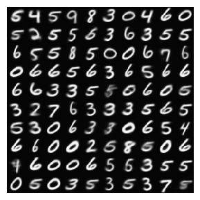
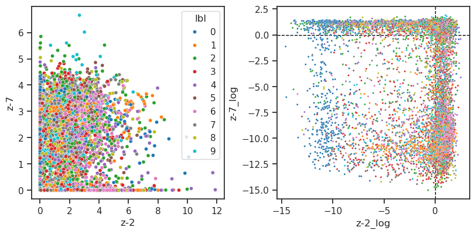
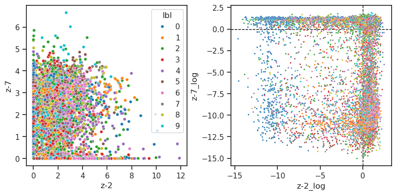
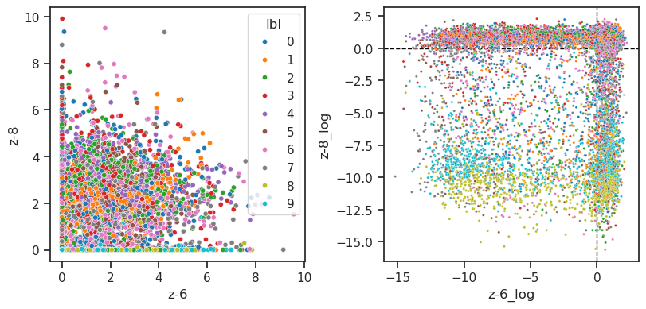
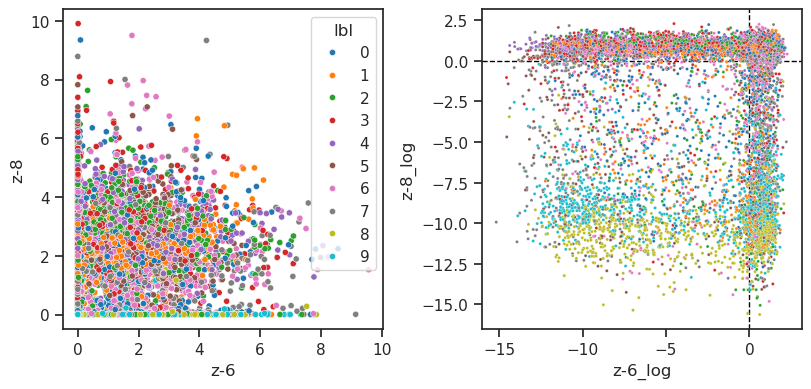

(01) Best fits#
Motivation: Best MNIST and CIFAR10-PATCHES fits as of May 1, 2024. Device = cuda:0
Show code cell source
# HIDE CODE
import os, sys
from IPython.display import display
# tmp & extras dir
git_dir = os.path.join(os.environ['HOME'], 'Dropbox/git')
extras_dir = os.path.join(git_dir, 'jb-vae/_extras')
fig_base_dir = os.path.join(git_dir, 'jb-vae/figs')
tmp_dir = os.path.join(git_dir, 'jb-vae/tmp')
# GitHub
sys.path.insert(0, os.path.join(git_dir, '_PoissonVAE'))
from analysis.eval import sparse_score
from figures.fighelper import *
from vae.train_vae import *
# warnings, tqdm, & style
warnings.filterwarnings('ignore', category=DeprecationWarning)
from rich.jupyter import print
%matplotlib inline
set_style()
device_idx = 0
device = f'cuda:{device_idx}'
model_type = 'poisson'
MNIST#
architecture: <CONV|CONV>
cfg_vae, cfg_tr = default_configs('MNIST', model_type)
print(f"VAE:\n{cfg_vae}\n\nTrainer:\n{cfg_tr}")
VAE: {'dataset': 'MNIST', 'prior_clamp': -3.0, 'prior_log_dist': 'uniform', 'rmax_q': 1.0, 'n_ch': 32, 'n_latents': 10, 'enc_type': 'conv', 'dec_type': 'conv', 'enc_bias': True, 'dec_bias': True, 'weight_norm': False} Trainer: {'temp_anneal_portion': 0.5, 'temp_anneal_type': 'lin', 'temp_start': 1.0, 'temp_stop': 0.05, 'lr': 0.002, 'epochs': 900, 'batch_size': 200, 'warm_restart': 2, 'optimizer_kws': {'weight_decay': 0.0003}, 'grad_clip': 1000}
vae = MODEL_CLASSES[model_type](CFG_CLASSES[model_type](**cfg_vae))
tr = TrainerVAE(vae, ConfigTrainVAE(**cfg_tr), device=device)
vae.print()
print(f"{vae.cfg.name()}\n{tr.cfg.name()}_({vae.timestamp})\n")
tr.show_schedules()
+-------------+------------+ | Module Name | Num Params | +-------------+------------+ | PoissonVAE | 6.2 Mil | | --- | --- | | stem | 352 | | enc | 4.9 Mil | | fc_enc | 2.6 K | | fc_dec | 11.3 K | | dec | 1.2 Mil | +-------------+------------+
poisson_uniform_c(-3)_rmax(1)_MNIST_z-10_k-32_<conv+b|conv+b> mc_b200-ep900-lr(0.002)_beta(1:0x0.5)_temp(0.05:lin-0.5)_gr(1000)_(2024_05_02,09:36)
vae.fc_dec.bias.shape, vae.fc_enc.bias.shape
(torch.Size([1024]), torch.Size([10]))
print(vae)
PoissonVAE( (mse): MSELoss() (stem): Conv2D(1, 32, kernel_size=(3, 3), stride=(1, 1), padding=valid) (enc): Sequential( (0): Cell( (skip): Identity() (ops): ModuleList( (0-1): 2 x ConvLayer( (act_fn): SiLU() (conv): Conv2D(32, 32, kernel_size=(3, 3), stride=(1, 1), padding=(1, 1)) ) ) (se): SELayer( (fc): Sequential( (0): Linear(in_features=32, out_features=4, bias=True) (1): ReLU(inplace=True) (2): Linear(in_features=4, out_features=32, bias=True) (3): Sigmoid() ) ) ) (1): Cell( (skip): StrideReduce( (swish): SiLU() (conv): Conv2D(32, 64, kernel_size=(1, 1), stride=(2, 2)) ) (ops): ModuleList( (0): ConvLayer( (act_fn): SiLU() (conv): Conv2D(32, 64, kernel_size=(3, 3), stride=(2, 2), padding=(1, 1)) ) (1): ConvLayer( (act_fn): SiLU() (conv): Conv2D(64, 64, kernel_size=(3, 3), stride=(1, 1), padding=(1, 1)) ) ) (se): SELayer( (fc): Sequential( (0): Linear(in_features=64, out_features=4, bias=True) (1): ReLU(inplace=True) (2): Linear(in_features=4, out_features=64, bias=True) (3): Sigmoid() ) ) ) (2): Cell( (skip): Identity() (ops): ModuleList( (0-1): 2 x ConvLayer( (act_fn): SiLU() (conv): Conv2D(64, 64, kernel_size=(3, 3), stride=(1, 1), padding=(1, 1)) ) ) (se): SELayer( (fc): Sequential( (0): Linear(in_features=64, out_features=4, bias=True) (1): ReLU(inplace=True) (2): Linear(in_features=4, out_features=64, bias=True) (3): Sigmoid() ) ) ) (3): Cell( (skip): StrideReduce( (swish): SiLU() (conv): Conv2D(64, 128, kernel_size=(1, 1), stride=(2, 2)) ) (ops): ModuleList( (0): ConvLayer( (act_fn): SiLU() (conv): Conv2D(64, 128, kernel_size=(3, 3), stride=(2, 2), padding=(1, 1)) ) (1): ConvLayer( (act_fn): SiLU() (conv): Conv2D(128, 128, kernel_size=(3, 3), stride=(1, 1), padding=(1, 1)) ) ) (se): SELayer( (fc): Sequential( (0): Linear(in_features=128, out_features=8, bias=True) (1): ReLU(inplace=True) (2): Linear(in_features=8, out_features=128, bias=True) (3): Sigmoid() ) ) ) (4): Cell( (skip): Identity() (ops): ModuleList( (0-1): 2 x ConvLayer( (act_fn): SiLU() (conv): Conv2D(128, 128, kernel_size=(3, 3), stride=(1, 1), padding=(1, 1)) ) ) (se): SELayer( (fc): Sequential( (0): Linear(in_features=128, out_features=8, bias=True) (1): ReLU(inplace=True) (2): Linear(in_features=8, out_features=128, bias=True) (3): Sigmoid() ) ) ) (5): Cell( (skip): StrideReduce( (swish): SiLU() (conv): Conv2D(128, 256, kernel_size=(1, 1), stride=(2, 2)) ) (ops): ModuleList( (0): ConvLayer( (act_fn): SiLU() (conv): Conv2D(128, 256, kernel_size=(3, 3), stride=(2, 2), padding=(1, 1)) ) (1): ConvLayer( (act_fn): SiLU() (conv): Conv2D(256, 256, kernel_size=(3, 3), stride=(1, 1), padding=(1, 1)) ) ) (se): SELayer( (fc): Sequential( (0): Linear(in_features=256, out_features=16, bias=True) (1): ReLU(inplace=True) (2): Linear(in_features=16, out_features=256, bias=True) (3): Sigmoid() ) ) ) (6): Cell( (skip): Identity() (ops): ModuleList( (0-1): 2 x ConvLayer( (act_fn): SiLU() (conv): Conv2D(256, 256, kernel_size=(3, 3), stride=(1, 1), padding=(1, 1)) ) ) (se): SELayer( (fc): Sequential( (0): Linear(in_features=256, out_features=16, bias=True) (1): ReLU(inplace=True) (2): Linear(in_features=16, out_features=256, bias=True) (3): Sigmoid() ) ) ) (7): ResConvPool( (act_fn): SiLU() (pool): AdaptiveAvgPool2d(output_size=(1, 1)) (conv): Conv2D(256, 256, kernel_size=(4, 4), stride=(1, 1), padding=valid) ) (8): Flatten(start_dim=1, end_dim=-1) (9): ResDenseLayer( (fc1): Linear(in_features=256, out_features=2048, bias=True) (fc2): Linear(in_features=2048, out_features=256, bias=True) (layer_norm): LayerNorm((256,), eps=1e-05, elementwise_affine=True) (drop): Dropout(p=0.1, inplace=False) (relu): ReLU() ) ) (fc_enc): Linear(in_features=256, out_features=10, bias=True) (fc_dec): Linear(in_features=10, out_features=1024, bias=True) (dec): Sequential( (0): Cell( (skip): Identity() (ops): ModuleList( (0): ConvLayer( (act_fn): SiLU() (conv): Conv2D(256, 256, kernel_size=(3, 3), stride=(1, 1), padding=(1, 1)) ) ) (se): SELayer( (fc): Sequential( (0): Linear(in_features=256, out_features=16, bias=True) (1): ReLU(inplace=True) (2): Linear(in_features=16, out_features=256, bias=True) (3): Sigmoid() ) ) ) (1): Cell( (skip): Sequential( (0): Upsample(scale_factor=2.0, mode='nearest') (1): Conv2D(256, 128, kernel_size=(1, 1), stride=(1, 1)) ) (ops): ModuleList( (0): ConvLayer( (upsample): Upsample(scale_factor=2.0, mode='nearest') (act_fn): SiLU() (conv): Conv2D(256, 128, kernel_size=(3, 3), stride=(1, 1), padding=(1, 1)) ) ) (se): SELayer( (fc): Sequential( (0): Linear(in_features=128, out_features=8, bias=True) (1): ReLU(inplace=True) (2): Linear(in_features=8, out_features=128, bias=True) (3): Sigmoid() ) ) ) (2): Cell( (skip): Identity() (ops): ModuleList( (0): ConvLayer( (act_fn): SiLU() (conv): Conv2D(128, 128, kernel_size=(3, 3), stride=(1, 1), padding=(1, 1)) ) ) (se): SELayer( (fc): Sequential( (0): Linear(in_features=128, out_features=8, bias=True) (1): ReLU(inplace=True) (2): Linear(in_features=8, out_features=128, bias=True) (3): Sigmoid() ) ) ) (3): Cell( (skip): Sequential( (0): Upsample(scale_factor=2.0, mode='nearest') (1): Conv2D(128, 64, kernel_size=(1, 1), stride=(1, 1)) ) (ops): ModuleList( (0): ConvLayer( (upsample): Upsample(scale_factor=2.0, mode='nearest') (act_fn): SiLU() (conv): Conv2D(128, 64, kernel_size=(3, 3), stride=(1, 1), padding=(1, 1)) ) ) (se): SELayer( (fc): Sequential( (0): Linear(in_features=64, out_features=4, bias=True) (1): ReLU(inplace=True) (2): Linear(in_features=4, out_features=64, bias=True) (3): Sigmoid() ) ) ) (4): Cell( (skip): Identity() (ops): ModuleList( (0): ConvLayer( (act_fn): SiLU() (conv): Conv2D(64, 64, kernel_size=(3, 3), stride=(1, 1), padding=(1, 1)) ) ) (se): SELayer( (fc): Sequential( (0): Linear(in_features=64, out_features=4, bias=True) (1): ReLU(inplace=True) (2): Linear(in_features=4, out_features=64, bias=True) (3): Sigmoid() ) ) ) (5): Cell( (skip): Sequential( (0): Upsample(scale_factor=2.0, mode='nearest') (1): Conv2D(64, 32, kernel_size=(1, 1), stride=(1, 1)) ) (ops): ModuleList( (0): ConvLayer( (upsample): Upsample(scale_factor=2.0, mode='nearest') (act_fn): SiLU() (conv): Conv2D(64, 32, kernel_size=(3, 3), stride=(1, 1), padding=(1, 1)) ) ) (se): SELayer( (fc): Sequential( (0): Linear(in_features=32, out_features=4, bias=True) (1): ReLU(inplace=True) (2): Linear(in_features=4, out_features=32, bias=True) (3): Sigmoid() ) ) ) (6): Cell( (skip): Identity() (ops): ModuleList( (0): ConvLayer( (act_fn): SiLU() (conv): Conv2D(32, 32, kernel_size=(3, 3), stride=(1, 1), padding=(1, 1)) ) ) (se): SELayer( (fc): Sequential( (0): Linear(in_features=32, out_features=4, bias=True) (1): ReLU(inplace=True) (2): Linear(in_features=4, out_features=32, bias=True) (3): Sigmoid() ) ) ) (7): Upsample(size=14, mode='nearest') (8): Cell( (skip): Sequential( (0): Upsample(scale_factor=2.0, mode='nearest') (1): Conv2D(32, 16, kernel_size=(1, 1), stride=(1, 1)) ) (ops): ModuleList( (0): ConvLayer( (upsample): Upsample(scale_factor=2.0, mode='nearest') (act_fn): SiLU() (conv): Conv2D(32, 16, kernel_size=(3, 3), stride=(1, 1), padding=(1, 1)) ) ) (se): SELayer( (fc): Sequential( (0): Linear(in_features=16, out_features=4, bias=True) (1): ReLU(inplace=True) (2): Linear(in_features=4, out_features=16, bias=True) (3): Sigmoid() ) ) ) (9): Cell( (skip): Identity() (ops): ModuleList( (0): ConvLayer( (act_fn): SiLU() (conv): Conv2D(16, 16, kernel_size=(3, 3), stride=(1, 1), padding=(1, 1)) ) ) (se): SELayer( (fc): Sequential( (0): Linear(in_features=16, out_features=4, bias=True) (1): ReLU(inplace=True) (2): Linear(in_features=4, out_features=16, bias=True) (3): Sigmoid() ) ) ) (10): Conv2D(16, 1, kernel_size=(1, 1), stride=(1, 1), padding=valid) ) )
Train#
takes ~2.5 hours
"""
# comment = f"..._{tr.cfg.name()}"
comment = tr.cfg.name()
tr.train(comment=comment)
"""
Load model#
tr, meta = load_model_lite(
path=pjoin(tmp_dir, 'Dekel', 'pois-conv-mnist'),
device=device,
verbose=True,
)
print(meta)
# params: 6.2 M
{ 'timestamp': '2024_04_30,21:50', 'checkpoint': 900, 'global_step': 270000, 'file': 'PoissonVAE+TrainerVAE-0900_(2024_05_01,00:24).pt', 'path': '/home/hadi/Dropbox/git/jb-vae/tmp/Dekel/pois-conv-mnist' }
tr.show_recon(t=0.0), tr.show_samples(t=0.0);

Loss vld#
default: freezes (temp = 0.0)
data, loss, etc = tr.validate()
_loss = {k: v.mean() for k, v in loss.items()}
_loss['tot'] = _loss['mse'] + _loss['kl']
print(_loss)
{'mse': 27.323044, 'kl': 9.145828, 'kl_diag': 0.91458285, 'tot': 36.468872}
Identify dead neurons#
dead_thres = 0.0
dead = loss['kl_diag'] < dead_thres
dead.sum()
0
loss['kl_diag']
array([0.92014444, 0.85835016, 0.7852803 , 0.736939 , 0.94743544,
1.0657085 , 0.92083704, 0.9868529 , 0.90971357, 1.0145661 ],
dtype=float32)
Spike counts#
lifetime, population, percents = sparse_score(data['z'], cutoff=0.01)
print(percents)
{'0': 55.5, '1': 12.2, '2': 11.2, '3': 8.8, '4': 5.5, '5': 3.4, '6': 1.8, '7': 0.8, '8+': 0.8}
fig, ax = create_figure(1, 1, (6, 2.8))
max_val = float(list(percents.values())[0])
ax.set(
xlabel='Spike count',
ylabel='Portion [%]',
ylim=(0, (np.ceil(max_val / 10) + 1) * 10),
)
colors = ['tomato' if lbl == '0' else 'dimgrey' for lbl in percents]
bars = ax.bar(percents.keys(), percents.values(), color=colors)
for bar in bars:
y = bar.get_height()
x = bar.get_x() + 1.3 * bar.get_width() / 2
plt.text(x, y + 1, f'{y:0.1f}%', ha='center', va='bottom')
ax.locator_params(axis='y', nbins=5)
ax.grid()
plt.show()
fig, axes = create_figure(1, 2, (7, 2), layout='constrained')
sns.histplot(lifetime, stat='percent', ax=axes[0])
sns.histplot(population, stat='percent', ax=axes[1])
for i, x2p in enumerate([lifetime, population]):
_a, _med = np.nanmean(x2p), np.nanmedian(x2p)
# axes[i].axvline(_med, color='g', ls='--', label=f'median: {_med:0.2f}')
axes[i].axvline(_a, color='r', ls='--', label=f'avg: {_a:0.2f}')
add_legend(axes)
axes[0].set(title='Lifetime', ylabel='%')
axes[1].set(title='Population', ylabel='')
plt.show()
tot_nspks = data['z'][:, ~dead].sum(1)
tot_firing = (data['z'][:, ~dead] > 0).mean(1)
min(tot_nspks), max(tot_nspks)
(0.0, 38.0)
a = np.floor(min(tot_nspks) / 10) * 10
b = np.ceil(max(tot_nspks) / 10) * 10
fig, axes = create_figure(1, 2, (9, 2), layout='constrained')
sns.histplot(tot_nspks, bins=np.linspace(a, b, int(b - a) + 1), kde=True, stat='percent', ax=axes[0])
sns.histplot(tot_firing, bins=np.linspace(0, 1.0, 101), kde=True, stat='percent', ax=axes[1])
_a = tot_nspks.mean()
axes[0].axvline(_a, color='r', ls='--', label=f'avg = {_a:0.1f} ')
_a = tot_firing.mean()
axes[1].axvline(_a, color='r', ls='--', label=f'avg = {_a:0.3f} ')
axes[0].axvline(vae.cfg.n_latents, color='k', ls='--')
axes[1].axvline(1.0, color='k', ls='--')
axes[0].set_title('total # spks per stimulus')
axes[1].set(title='portion active neurons per stimulus', ylabel='')
for ax in axes.flat:
ax.axvline(0, color='k', ls='--')
ax.legend()
plt.show()
ax = sns.histplot(np.log(etc['r*dr'][:, ~dead].ravel()), stat='percent', bins=100)
ax.set_yscale('log')
def _show_pairwise(i, j):
df = pd.DataFrame({
f'z-{i}': etc['r*dr'][:, i],
f'z-{j}': etc['r*dr'][:, j],
f'z-{i}_log': np.log(etc['r*dr'][:, i]),
f'z-{j}_log': np.log(etc['r*dr'][:, j]),
'lbl': tonp(tr.dl_vld.dataset.tensors[1]).astype(int),
})
fig, axes = create_figure(1, 2, (8, 4.5), layout='constrained')
sns.scatterplot(data=df, x=f'z-{i}', y=f'z-{j}', hue='lbl', palette='tab10', s=20, ax=axes[0])
sns.scatterplot(data=df, x=f'z-{i}_log', y=f'z-{j}_log', hue='lbl', palette='tab10', s=5, legend=False, ax=axes[1])
axes[1].axvline(0, color='k', ls='--', lw=1.0, zorder=0)
axes[1].axhline(0, color='k', ls='--', lw=1.0, zorder=0)
ax_square(axes)
plt.show()
for i, j in list(itertools.combinations(
range(tr.model.cfg.n_latents), 2)):
_show_pairwise(i, j)
 


 


sns.histplot(tonp(torch.cat(tr.model.all_lognorm)));
(np.array(list(tr.stats['grad'].values())) > 500).sum() / len(tr.stats['grad'])
0.009703703703703704
fig, ax = create_figure(1, 1, (11, 4))
plt.plot(tr.stats['grad'].keys(), tr.stats['grad'].values(), lw=0.7)
ax.axhline(tr.cfg.grad_clip, color='r')
ax.set(yscale='log')
plt.show()
df, df_summary = knn_analysis(
x=etc['log_dr'],
y=tonp(tr.dl_vld.dataset.tensors[1]).astype(int),
n_iter=100,
verbose=True,
)
train sample size: 5000, iter #0: 100%|█████████████████| 801/801 [01:40<00:00, 7.93it/s]
df_summary
| mean | std | |
|---|---|---|
| size | ||
| 20 | 0.418638 | 0.062253 |
| 50 | 0.658010 | 0.055708 |
| 100 | 0.796354 | 0.034670 |
| 200 | 0.882576 | 0.021348 |
| 500 | 0.936824 | 0.010214 |
| 1000 | 0.953332 | 0.007023 |
| 2000 | 0.960502 | 0.005561 |
| 4000 | 0.963162 | 0.002998 |
| 5000 | 0.962600 | NaN |
CIFAR10-PATCHES#
architecture: <MLP|LIN>
cfg_vae, cfg_tr = default_configs('CIFAR10-PATCHES', model_type)
cfg_vae['enc_type'] = 'mlp'
cfg_vae['enc_bias'] = True
print(f"VAE:\n{cfg_vae}\n\nTrainer:\n{cfg_tr}")
VAE: {'dataset': 'CIFAR10-PATCHES', 'prior_clamp': -3.0, 'prior_log_dist': 'uniform', 'rmax_q': 1.0, 'n_ch': 16, 'n_latents': 512, 'enc_type': 'mlp', 'dec_type': 'lin', 'enc_bias': True, 'dec_bias': False} Trainer: {'temp_anneal_portion': 1.0, 'temp_anneal_type': 'exp', 'temp_start': 1.0, 'temp_stop': 0.05, 'lr': 0.005, 'epochs': 3600, 'batch_size': 1000, 'optimizer_kws': {'weight_decay': 0.0}, 'grad_clip': 500}
vae = MODEL_CLASSES[model_type](CFG_CLASSES[model_type](**cfg_vae))
tr = TrainerVAE(vae, ConfigTrainVAE(**cfg_tr), device=device)
vae.print()
print(f"{vae.cfg.name()}\n{tr.cfg.name()}_({vae.timestamp})\n")
tr.show_schedules()
+-------------+------------+ | Module Name | Num Params | +-------------+------------+ | PoissonVAE | 2.4 Mil | | --- | --- | | enc | 2.1 Mil | | fc_enc | 131.6 K | | fc_dec | 131.1 K | +-------------+------------+
poisson_uniform_c(-3)_rmax(1)_CIFAR10-PATCHES_z-512_k-16_<mlp+b|lin> mc_b1000-ep3600-lr(0.005)_beta(1:0x0.5)_temp(0.05:exp-1)_gr(500)_(2024_05_02,09:39)
vae.fc_dec.bias, vae.fc_enc.bias.shape
(None, torch.Size([512]))
print(vae)
PoissonVAE( (mse): MSELoss() (enc): ResDenseLayer( (fc1): Linear(in_features=256, out_features=4096, bias=True) (fc2): Linear(in_features=4096, out_features=256, bias=True) (layer_norm): LayerNorm((256,), eps=1e-05, elementwise_affine=True) (drop): Dropout(p=0.1, inplace=False) (relu): ReLU() ) (fc_enc): Linear(in_features=256, out_features=512, bias=True) (fc_dec): Linear(in_features=512, out_features=256, bias=False) )
Train#
takes ~1.5 hours
"""
# comment = f"..._{tr.cfg.name()}"
comment = tr.cfg.name()
tr.train(comment=comment)
"""
Load model#
tr, meta = load_model_lite(
path=pjoin(tmp_dir, 'Dekel', 'pois-mlp'),
device=device,
verbose=True,
)
print(meta)
# params: 2.4 M
{ 'timestamp': '2024_05_01,17:46', 'checkpoint': 3600, 'global_step': 720000, 'file': 'PoissonVAE+TrainerVAE-3600_(2024_05_01,19:18).pt', 'path': '/home/hadi/Dropbox/git/jb-vae/tmp/Dekel/pois-mlp' }
tr.show_recon(t=0.0, pad=1);
Loss vld#
default: freezes (temp = 0.0)
data, loss, etc = tr.validate()
_loss = {k: v.mean() for k, v in loss.items()}
_loss['tot'] = _loss['mse'] + _loss['kl']
print(_loss)
{'mse': 128.57693, 'kl': 34.691856, 'kl_diag': 0.06775753, 'tot': 163.2688}
Dead neurons#
dead_thres = 0.01
dead = loss['kl_diag'] < dead_thres
dead.sum()
4
bins = np.linspace(0, 91, 92)
ax = sns.histplot(loss['kl_diag'][~dead] * 1000, bins=bins, color='dimgrey', label='alive')
sns.histplot(loss['kl_diag'][dead] * 1000, bins=bins, color='r', label='dead', ax=ax)
ax.axvline(dead_thres * 1000, color='r', ls='--', alpha=0.6)
ax.locator_params(axis='x', nbins=11)
ax.legend()
plt.show()
Sparse score#
lifetime, population, percents = sparse_score(data['z'][:, ~dead], cutoff=0.05)
print(percents)
{'0': 93.0, '1': 6.1, '2': 0.7, '3+': 0.2}
fig, axes = create_figure(1, 2, (7, 2.5), layout='constrained')
kws = dict(stat='percent', kde=True, bins=np.linspace(0, 1.01, 102) - 0.005)
sns.histplot(lifetime, ax=axes[0], **kws)
sns.histplot(population, ax=axes[1], **kws)
for i, x2p in enumerate([lifetime, population]):
_a = np.nanmean(x2p)
axes[i].axvline(_a, color='r', ls='--', label=f'avg: {_a:0.3g}')
axes[0].set(title='Lifetime', ylabel='%')
axes[1].set(title='Population', ylabel='')
add_legend(axes, fontsize=14)
add_grid(axes)
plt.show()
Plot dictionary#
tr.model.show(dpi=150, order=np.argsort(loss['kl_diag']));
Loggabor analysis#
from analysis.eval import fit_loggabor
from figures.theta import plot_theta
from figures.imgs import plot_weights
results = fit_loggabor(tr, verbose=True)
100%|███████████| 512/512 [00:14<00:00, 35.09it/s]
results.loc[results['sf_0'] > 10, 'sf_0'] = np.nan
results.iloc[np.logical_or(dead, np.isnan(results['theta']))] = np.nan
results.describe()
| x_pos | y_pos | theta | sf_0 | phase | B_sf | B_theta | theta_deg | r_prior | |
|---|---|---|---|---|---|---|---|---|---|
| count | 5.080000e+02 | 508.000000 | 508.000000 | 508.000000 | 508.000000 | 508.000000 | 508.000000 | 508.000000 | 508.000000 |
| mean | 7.803936e+00 | 7.580709 | 0.102816 | 0.273024 | -0.094729 | 0.579469 | 0.316762 | 90.575963 | 0.084335 |
| std | 4.280625e+00 | 4.233778 | 0.898261 | 0.059279 | 1.704661 | 0.110076 | 0.235642 | 53.299056 | 0.034252 |
| min | 1.102653e-08 | 0.215142 | -1.570796 | 0.165162 | -3.526949 | 0.400000 | 0.079876 | 0.001965 | 0.019746 |
| 25% | 4.179473e+00 | 3.739308 | -0.687245 | 0.256889 | -1.645859 | 0.504959 | 0.251537 | 45.708179 | 0.058335 |
| 50% | 7.999879e+00 | 7.654267 | 0.011595 | 0.264925 | -0.549271 | 0.549707 | 0.292111 | 89.567935 | 0.080581 |
| 75% | 1.159731e+01 | 11.570960 | 0.867198 | 0.275425 | 1.570471 | 0.631772 | 0.347842 | 135.726911 | 0.105613 |
| max | 1.482812e+01 | 14.521271 | 1.570796 | 1.300415 | 3.616241 | 1.200598 | 4.957411 | 179.972778 | 0.224481 |
fig, _ = plot_theta(results, ylim=(-0.0, 0.24))
pal = {'axial': 'dimgrey', 'oblique': 'tomato'}
fig, axes = create_figure(1, 2, (8, 4), layout='constrained')
sns.scatterplot(data=results, y='sf_0', x='theta_deg', hue='label', palette=pal, ax=axes[0])
sns.scatterplot(data=results, y='sf_0', x='theta_deg', hue='label', palette=pal, ax=axes[1])
axes[1].set(ylim=(0.16, 0.49), ylabel='')
move_legend(axes[1])
plt.show()
rates_axial = results.loc[(results['label'] == 'axial') & ~dead, 'r_prior'].values
rates_oblique = results.loc[(results['label'] == 'oblique') & ~dead, 'r_prior'].values
print(f"{sp_stats.mannwhitneyu(rates_axial, rates_oblique, method='auto')}")
MannwhitneyuResult(statistic=9575.0, pvalue=6.185640781682435e-42)
order = np.argsort(results['sf_0'].values)
_ = tr.model.show(order=order)
w_dec = tonp(tr.model.fc_dec.weight.data)
w_dec = w_dec.T.reshape(-1, 16, 16)
ids = np.argsort(results['sf_0'].values)
plot_weights(w_dec[ids[:16]], nrows=1, dpi=130)
plt.show()
plot_weights(w_dec[ids[-32:]], nrows=2, dpi=130)
plt.show()